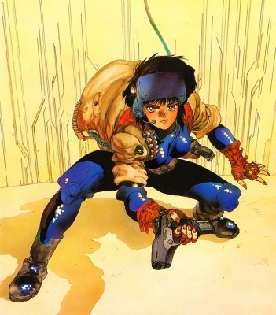
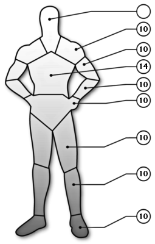

| Name | Major Motoko Kusanagi | Role | Cop | Armor |
|  | Gender | Age |  |
| F | 35-40 |
| Stats |
| INT | 9 |
| REF | 15 |
| TECH | 6 |
| COOL | 7 |
| ATTR | 8 |
| LUCK | 6 |
| MA | 15 |
| BODY | 15 |
| EMP | 5 |
| Run | 75 m |
| Leap | 3.75 m |
| Lift | 75 kg |
 | NameEnc. |
Level 2 body armor1
Total1 |
| |
| Skills[Base / Total] | [Base / Total] |
|
Special abilities
Authority[ 7 / ]
Interface[ 3 / ]
Combat sense[ 9 / ]
Body
Endurance[ 8 / ]
Strength feat[ 7 / ]
Swimming[ 3 / ]
Cool/will
Streetwise[ 5 / ]
Interrogation[ 6 / ]
Intimidate[ 6 / ]
Empathy
Leadership[ 4 / ]
Social[ 3 / ]
Intelligence
Library search[ 4 / ]
Education & General knowledge[ 8 / ]
Expert (counter-terrorism)[ 6 / ]
Expert (covert operations)[ 7 / ]
Awareness/Notice[ 6 / ]
Hide/Evade[ 5 / ]
Shadow/Track[ 6 / ]
Wilderness survival[ 3 / ]
|
Reflex
Submachine gun[ 8 / ]
Heavy weapons[ 4 / ]
Martial arts (Krav-Maga)[ 7 / ]
Athletics[ 4 / ]
Submarine combat[ 6 / ]
Driving[ 6 / ]
Stealth[ 6 / ]
Dodge & Escape[ 4 / ]
Rifle[ 7 / ]
Melee[ 6 / ]
Handgun[ 7 / ]
Tech
Weaponsmith[ 6 / ]
Forgery[ 4 / ]
Pick lock[ 7 / ]
Demolitions[ 6 / ]
|
| |
| Weapon(s)[#] | Type | WA | Conc. | Ammo | Dam. | #Shots[#] | ROF | Rel. | Range |
| Seburo Bobsons[1] | PST | 0 | P | 9 mm C | 2D6+1D3+1 | 10[3] | 2 | VR | 50 m |
| Seburo C-X[1] | PST | +3 | J | 11 mm C | 3D6+2 | 16[2] | 2 | VR | 75 m |
| Seburo MN-40[1] | RIF | +2 | N | 5.56C | 5D6 | 30[2] | 2/3/15 | VR | 400 m |
| |
| Equipment | Cybernetic |
| Unknown | Raven Microcybernetics Ghost
|
| |
| Background |
| Kusanagi's background is almost completely a mystery. What is known is that she served with some sort of military before, were she undoubtedly acquired the nickname "Major" (no it's not her section 9 rank). The "Major's" section 9 career began when she was scouted from the special maneuver team of the Ministry of Home Affairs. She is extensively trained in covert tactics, intelligence, and demolitions. Motoko is a full borg and only a part of her brain is from her original body. Although her body is made to look like a standard body, it is in fact highly advanced, top of the line combat model. Like all borgs of her type she is equipped with an advanced cyber-brain. Motoko appears to be in her early 20's but her actual age is estimated at being in her late 30's. |